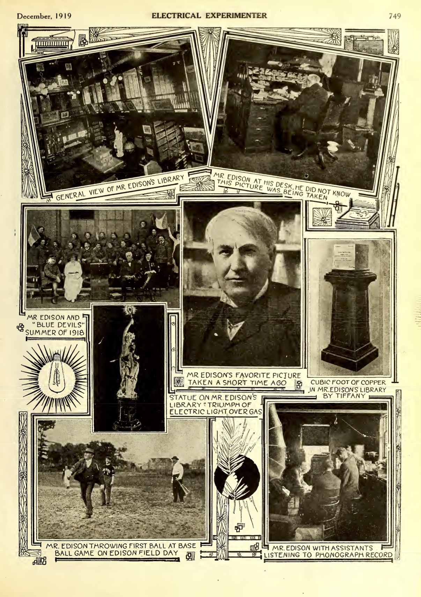
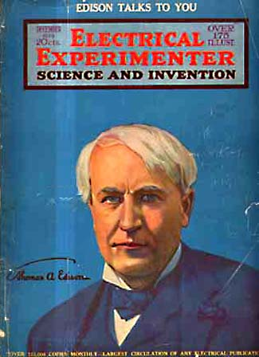

Thomas A. Edison Speaks to You
*The Electrical Experimenter*, vol. 7 no. 8 , December 1919
DRAFT: Please do not share without permission of the author. Typeset versions in web | pdf | doc
\begin{center} \fbox{ \parbox[c]{7cm}{
THIS is the first interview which Mr. Edison has given out for some years past.
\vspace{3mm}
Mr. Edison, who, as is well known, was elected Chairman of the Navy Consulting Board at the outbreak of the world war, was taken up with important duties, refusing to see all visitors. Even several years before this, no general interviews were given out. In this story are covered many points of interest not only to all experimenters and the man interested in science, but to the world at large. Much that is new has been presented here, and it will be noted with satisfaction by all that at the age of seventy-three, Mr. Edison’s mind is as keen and clear as ever. We are certain our readers will appreciate this important article. Nearly all of the photographs and illustrations appearing in this story have never been publisht.
} } \end{center}
MR. EDISON having kindly consented to speak to the readers of the Electrical Experimenter, an interview with the illustrious inventor had been arranged for during the latter part of October of this year.1
This interview, by the way, has some history attached to it. During the early part of 1917 a similar appointment had been made to interview Mr. Edison on the same subject. But just then the great war broke out and Mr. Edison, who, as is well known, was immediately appointed the head of the Naval Consulting Board, broke off all engagements, devoting himself day and night to the welfare of his country. For this reason the interview only took place a few weeks ago.
I ARRIVE AT MR. EDISON’S LABORATORY.
I arrived at West Orange on a crisp October morning and was soon in the little gate house which protects Mr. Edison from a curious public. Plain and modest as it is, the little red house has past thru its gates hundreds and thousands of the world’s most famous men and dignitaries.. Few such modest little houses, if any, have held under their roofs such an array of famous people who have come to pay hornI age to one of the greatest inventors the world has ever known.
In this little gate house is located the famous time clock on which Mr. Edison rings in his time and rings out every day of the year, many holidays included. An inspection of his week’s time card revealed that Mr. Edison had invariably been at the laboratory before 8 o’clock in the morning and had worked as many as eighteen hours for three days at a stretch. Only once did he have a twelve-hour day. Right then and there I wondered how Mr. Edison felt about the now so popular eight or sixhour day, and I meant to ask him about it, but we became so engrossed in other more important questions which are moving the world, that altho we touched upon this subject, the eight-hour day question was never broached by me.

After passing thru the gate house, I made my way to Mr. Edison’s library, where I was welcomed by Mr. W. H. Meadowcroft, his trusted and capable friend and secretary. While waiting for Mr. Edison, who was just then engaged with some chemical experiments, Mr. Meadowcroft pointed out all the interesting objects of Mr. Edison’s library. This library is a huge affair and, besides containing electrical, chemical and physical reference works printed in almost any imaginable language with English, French and German predominating, many other curiosities are to be found here. There are many dozens of autographed photographs of famous men hanging about the walls, as are famous historic photographs portraying this or that view of an important phase of Mr. Edison’s great discoveries, such as the electrical traction, the electric light, the phonograph, the moving’ picture and many others. A huge white marble statue immediately catches the eye. Mr. Edison brought this from Paris at the time of -the World’s Exhibition in 1889, it having caught his fancy. The marble figure represents a boy seated upon a broken gas lantern, holding aloft triumphantly an electric light. Another object of recent dating is a solid cubic foot of copper weighing several hundred pounds mounted upon a mahogany pedestal. This solid piece of copper, made by Tiffany and suitably engraved, was presented to Mr. Edison by the copper interests of this country as a tribute to the great inventor. This symbolic gift can be better understood when it is realized that fully 50 percent of most of this copper is used for lighting purposes, which art was founded by Mr. Edison.

![The Illustration at the Left Shows a Photographic Reproduction From One of Mr. Edison's Note Books. It Is Nothing Less Than the Now Historic Proof of the Invention of the Phonograph. It Shows the Conception of the Idea Plainly. On July 18, 1871, Mr. Edison Was Making Some Experiments Which Had Nothing To Do with the Phonograph. As a Matter of Fact It Seemed To Be More or Less Nebulous in His Own Mind, for at the Top of the Page He Wrote "Speaking Telegraph." The Part of Interest to History Is Found in the Foot Note of the Page, Which Reads as Follows: "Just Tried Experiment with a Diaphragm Having an Embossing Point and Held Against Paraffine Paper Moving Rapidly. The Speaking Vibrations Are Indented Nicely and There Is No Doubt I Shall Be Able to Start Up and Reproduce Automatically at Any Future Time the Human Voice Perfectly." Note Also the Two Witnesses' Names Under the Date, at Top of Page. The Other Page Shows a More Recent Sample of Mr. Edison's Handwriting. It Is From One of His Memorandum Books and Is Dated December 6, 1907. Note How Much Attention Mr. Edison Pays to Record Even Trivial Experiments, Also His Characteristic "N. G." In Two Places. The Changed Handwriting After an Elapsed Time of Thirty-Six Years Is of Great Interest.](images/edison2.jpg)
In this library I also inspected the famous “bed” upon which Mr. Edison catches a little sleep when he is engaged in day and night work at the laboratory. This cot is a very prosaic affair, and is located in the corner of the library amidst books and other curios. It is a bed in name only, for it is comprised of nothing but a mattress, pillow and a blanket.
On one of the walls, we also find a complete history of Mr. Edison’s Alkaline Storage Battery, exhibited on a large wall board. This is graphically shown by displaying every part, chemicals included, that go into the making of this famous non-lead battery. The thing that most interested me in Mr. Edison’s library, however, were his notes, and right here we find one of the pregnant reasons for Mr. Edison’s great success.
MR. EDISON’S LABORATORY NOTES.
As is well known, few inventors have made their inventions pay. They are usually “inventors” — and that* is all. Mr. Edison, on the other hand, aside from being an inventor, is also an excellent business man. Mr. Edison is systematic and knows the value of notes. ‘ He won many a patent suit on account of his notes written dozens of years ago. Early in his career it was brought home to him that when you have an idea, a record should be made at once! This was so engrained into his system that it is almost an impossibility for him to make even the most trivial experiment without making a careful record of it. Mr. Edison writes his notes in pencil, and at the end of the day the notes are carefully put away. Each month these notes are bound into a book, where they are kept for further reference. The office staff card-indexes his experiments and cross-indexes them, so at any time Mr. Edison can readily find any one experiment he made during the month, or, for that matter, any experiment that he made 25 years ago, if necessary. The notes are invariably made on yellow paper on ordinary scratch pads, the pages measuring about four by six inches. Being systematic, Mr. Edison always uses the same size pad year after year, and it is therefore refreshing to see the same sized sheets, and the same kind of paper made into bound volumes. While I was still inspecting some of these note books, many of which contain priceless data, Mr. Meadowcroft was informed by telephone that Mr. Edison was ready to receive me.
We walked across an open space separating the library from the chemical laboratory, and Mr. Meadowcroft explained that the building in which Mr. Edison was working that day was known as the chemical laboratory. Mr. Edison, however, does not work in the same laboratory all of the time, but for the past few years he has worked more in the chemical laboratory than in any of the others, which are located in different buildings about the great Edison works.
I MEET THE GREAT INVENTOR.
Together we entered the laboratory, the first impression being mostly green fumes. A half dozen of Mr. Edison’s assistants were to be seen busily engaged in performing various chemical experiments under the direction of their chief. Mr. Edison himself was nowhere to be seen. Advancing to the rear of the laboratory, I finally discovered Mr. Edison sitting at a little table busily engaged in writing notes upon a yellow pad, using a small pencil. 1 o the right of _ Mr. Edison on the table was a big chemical dish containing some green solution, presumably copper nitrate. The table, which was rather small, measured perhaps four feet in length by three feet in width. Mr. Edison was seated on a simple wooden chair. Altho the inventor is 73 years old at the present time, I was surprised at his vigorousness and apparent strength. The first impression at close quarters is a kindly face of ruddy complexion, from which peer two light blue-gray eyes of unusual intelligence. There is an enormous broad forehead, over which falls some silver white hair, giving the characteristic Edison curl. The jaw as well as the ears are well formed, both denoting character and a strong will. Like all great men, Edison has a big and massive nose, which denotes the thinker and philosopher. The lips are rather thin, around which a smile is constantly hovering.
Mr. Edison rose and we shook hands. I was startled somewhat, for I expected a large, hard hand. On the” contrary it was as small and soft as a woman’s hand, and white except for green stains upon it caused by chemicals. There is’ perhaps no more famous right hand in the world than Edison’s. // the world were called upon to make an inventory of what Mr. Edison’s hands have actually wrought in enriching this planet, there would not be gold enough to pay hink This is not a mere figure of speech or written in order to make this review grandiloquent. It is the unvarnished truth, as anyone with a clear mind and a pencil can easily figure out to his satisfaction. There certainly has never been one man since the dawn of history who has contributed so much to the world’s progress as has Mr. Edison. While of course the mind is supreme, Mr. Edison’s hands are the tools that achieved his success, and that is why I place so much stress upon this phase.
Mr. Edison spoke and welcomed me — a curiously high-pitched voice, unusual for one who has never heard it, but characteristic of the famous man.
MR. EDISON ANSWERS SOME IMPORTANT QUESTIONS.
Mr. Edison in late years has become hard of hearing, and it is necessary to speak quite loud in order that he may understand you. There being no second chair around, and Mr. Edison having seated himself again, I leaned against the laboratory table, being careful not to sit in the chemical dish, and taking other precautions not to disturb anything. After a few pleasant remarks on both sides, I immediately launched into the object of my visit, namely, to put up to Mr. Edison certain questions which had been in my mind, and which I knew would be of great interest to our rising generation and the world at large. I said to Mr. Edison :
“Do you believe that the young man who embarks on his electrical studies today, has the same chances and opportunities which you had at the beginning of your career?”
Mr. Edison was very emphatic when he replied : “He has far greater opportunities than I had — infinitely more. There is absolutely no comparison to be made, for the world has grown larger, and therefore the opportunities have multiplied.”
This prompted my second question : “In what branch of electricity, in your opinion, can the young man of today accomplish most — where is he most desired?”
Mr. Edison looked squarely at me and said : “There are thousands of men wanted in every branch of electrical engineering and hundreds of new branches based on new discoveries are being created continuously. The field is being enlarged every day and keeps growing. It would be difficult to pick out any one branch, since all are still in their infancy, and all have wonderful futures.”
My next question was : “What training should the young man undergo? Should he acquire practical experience first in the shop or laboratory; or should he take a correspondence course or go to college ; or all two or three?”
After a few seconds reflection, Mr. Edison replied : “I think one of the correspondence schools at Scranton, Pa., is the more available for most young men. After passing an examination, I think he should specialize in one branch and study it real hard. Then he should get busy and get a position. Any boy can be a success, providing he is willing to pay the price, which is continuous hard work. The trouble with a large number of young men today who are given positions is that they refuse to pay the price, and thus become a drag on the industry. Our young men today do not wish to work as much and as hard as they did when I was a boy. They want shorter hours and more pay, and too many amusements, the same as all workmen do ; but I think this condition will be rectified when people come to their senses. It certainly cannot last.”
“BE SURE YOUR IDEA WORKS, BEFORE PATENTING IT,” SAYS MR. EDISON.
“Mr. Edison, what constructive advice can you give to our young and rising inventors? Is it worth while to patent every idea, or only certain ideas? How can the young inventor differentiate between good ones and bad?”
After a few seconds of meditation Mr. Edison answered : “I suggest that if the young inventor has an idea he had better reduce it to actual practise and be sure that it works before applying for a patent. Ideas are easy, but working them into commercial shape is generally a long, tedious and expensive job. After successful operation and the results warrant it, a search of the United States Patent Office should be made to learn if it has not been previously invented or patented by others. Here is where the young inventor will have his greatest disappointment. He will find many a time and, as a matter of fact, in a majority of cases, that the idea has been patented already in one form or another. But disappointments show the salt of the inventor. Only by such disappointments can he triumph finally.”
This brought about my next question : “You have patented over one thousand inventions, Mr. Edison. How many of these have been actually worked?”
MR. EDISON HAS 1400 PATENTS.
Mr. Edison thought for a while — “Of the fourteen hundred patents which I have obtained, about four hundred were actually worked. This figure may be taken as proportionate for inventors. It is seldom that an inventor makes a success of his first invention. Usually he finds that altho he obtains a patent, for some reason or other the idea did not prove to be successful commercially, or could not be exploited otherwise. I have made k a rule in my later years, not to patent anything for which I knew there was no actual demand. Merely collecting patents is a waste of time, money and energy.”
This answer of Mr. Edison’s was of more than passing interest to me, and at the spur of the moment, I sang out : “Which is your pet invention?”
Mr. Edison smiled broadly, and it seemed to give him much pleasure when he said : “My pet invention I think is the phonograph first — and moving pictures second. Somehow or other these two inventions have taken hold of me more than my other ones, as I have probably spent more time upon them than upon any of the others.” This naturally brought me to the next question, which was. “Are your inventions perfected first in your mind or perfected in your models? Or by actual experiments?”
Without hesitation Mr. Edison continued : “I always start out with a definite idea of accomplishing a certain result. I collect all the data possible, both scientific, commercial and otherwise. I then proceed to sketch out every possible and probable way of attaining results and carry it to success by experimenting. In other words, first plan — then act. I usually find that the first model is not at all what I had in mind when I conceived the idea first. Any inventor knows this of course. I have found it necessary for this reason to build many models, and only in the exceptional case is the first model a success.”
MR. EDISON TELLS WHAT WORLD MOST NEEDS.
Knowing that Mr. Edison was perhaps one of the greatest authorities on what the world needs most to-day, I asked him : “What inventions does the world need most to-day?”
Becoming reflective, Mr. Edison thought for a few seconds and answered : “Automatic machinery, and systems for the quantity production of one-family houses so cheaply that every man can possess his own home. These two are the world’s greatest and most pressing problems today. Take a city like New York, for instance. Conditions there are indescribable. There are too many people in New York at present, and but little new building can be done there. I am in great favor of a law being passed that no additional factories should be built in the city of New York after 1925. This would mean that the housing as well as transportation facilities would not be continually overtaxed as they are now. In other words, the city should be forced to spread out either towards Long Island or to the north.”
At this juncture I mentioned to Mr. Edison a plan that was advanced some years ago, whereby it was advocated to build the so-called road house, i. e., a city running thru the country by having a single line of houses built one next to the other with a subway underneath. This would give us a city as well as country at the same time. There would be a sidewalk and roads on each side of the house running continuously without interruption and paralleling the houses.
“I do not think this idea is very practical,” vouchsafed Mr. Edison. “I think it would be too expensive and would make the traveling distances uncomfortable.”
While discussing the printers’ strike, which just then had started in New York, paralyzing the entire printing industry, I put the question : “What known substitute is there for white print paper when our raw materials give out during the next twenty-five years?”
Mr. Edison’s answer was surprising : “Print paper will never give out as long as wood grows in the Amazon and Congo river basins. It is simply a matter of transportation, and that, I believe, will soon be solved, as soon as the world is upon a peace basis once more.”
I have always had a pet idea on the subject of cold light, so I ventured my next question. “Over 99 per cent of the energy is lost today in useless heat in our incandescent lamps. How near are we to ‘cold light,’ and do you think it will be invented at all?”
“I think we are slowly advancing in increasing the efficiency of light production,” replied the inventor. “Any moment a discovery is liable to be made that will advance the efficiency of our present lighting methods enormously. The time is surely coming when ‘cold light’ will be a matter of fact. What shape this invention will take, it is impossible to predict today.”
“On which of our dormant and unworked sources of energy should our coming generation work most intensely, Mr. Edison?” I asked. “In your mind, is the exploitation of the following sources of energy chimerical or are they within the realm of possibility from the standpoint of modern electrical engineering :
Power derived from the earth’s internal heat.
Power derived from the earth’s atmosphere.
Power derived from the tides. Power derived from the sun’s heat.”
“UTILIZE EARTH’S NATURAL VOLCANIC HEAT,” SAYS MR. EDISON.
“Volcanic power to the extent of 5,000 H.P. is utilized already in Italy, and 20,000 H.P. more is being arranged for,” explained Mr. Edison. “Italy probably has more in her volcanic regions to work all her machinery and heat every house, carry on every metallurgical process and in fact make coal unnecessary in that country. My impression is that in Nevada and the Yellowstone region there is available volcanic energy greater than that given by all the coal mined in the United States. ‘As to solar energy’ we are getting there step by step. It is a long and weary road we have to travel, but we are making it slowly. I am an urgent advocate of water power. We are using already too much coal without adequate returns. Water power in the United States is not at all developed as it should be, and I see a great future in its proper development. I have advocated many times that the coal should be burnt at the mine instead of shipt by cars over long hauls. Electric power can be sent much cheaper thru electric wires than over the railroads ; in other words, first hauling the coal which is then burnt at the destination.”
This prompted my next question : “What are your ideas, Mr. Edison, as to atomic energy?”
Mr. Edison smiled broadly and, with a twinkle in his eye, said : “You know, Mr. Gernsback, I am an inventor, and as such I do not concern myself overmuch with philosophical research, and altho I have my own ideas on atomic energy I am not at present making them public.”
My next question was: .”What shall America do to prevent Germany from flooding the world with its cheap goods, and winning the war commercially twenty years hence?”
Here, too, Mr. Edison’s reply was. surprising as well as illuminating: Germany never has and never will flood the United States with cheap goods or undersell us if we make up our minds to beat her at that game. Out of thousands of articles, she is only efficient in two, to wit: chemical dyes and toys. This is due to our indifference to going into these lines of manufacture. I am happy to note, however, that American manufacturers are beginning to see the light, and are protecting themselves adequately.”
We then discust various other subjects, and it soon became apparent that Mr. Edison thought that every prophet is honored save in his own country. Mr. Edison was of the opinion that before the war, and particularly during the war, American inventors had not received their due credit, most of the fame having gone across the water. Mr. Edison felt particularly strong about a recent patent decision, where the honors of the vacuum tube used for radio purposes went to an English inventor. It is an incontrovertible fact that the ‘Edison effect” was known years before the Fleming valve was discovered, having been publisht in American and foreign scientific papers. Mr. Edison was certainly right in his contention that the honors for the invention of the vacuum tube should go to America, and there seems to be no doubt as to this.
My final question to Mr. Edison was, “What is your hobby, and how do you relax from your work?”
GREAT INVENTOR’S HOBBY IS “EXPERIMENTING.”
“Just now my hobby is ‘experimenting.’ I like experimenting better than anything that I know of. As for my relaxation, I like to camp out in the mountains, which I do every summer. This makes me fit for another winter’s hard work.”
Mr. Meadowcroft by this time was beginning to look at his watch, which I took for a gentle hint, and shaking hands with Mr. Edison, I took my leave.
While shaking hands I was again imprest with Mr. Edison’s hand, and I subsequently made a special request of Mr. Meadowcroft to let me have a photograph of the great inventor’s hands for publication. I vvas much astonished to learn that no photograph of Mr. Edison’s hands existed, none having ever been taken, the inventor feeling rather sensitive about this. I had seen many sketches of Mr. Edison’s hands, but I only then remembered never having seen an actual photograph. It took several weeks to secure permission from Mr. Edison, but finally the photograph of his hands was taken, and it is here presented to the readers of the Electrical Experimenter for the first time.
I also made another discovery, namely, that there was no oil painting in existence of Mr. Edison. True, several of these had been made by certain artists after Mr. Edison had patiently sat for them, but he was more or less displeased with the result, and on one occasion did not hesitate to put his foot thru one of them. After securing Air. Edison’s permission, I charged Mr. Howard V. Brown with the delicate mission of making an oil painting of the famous man. It is reproduced on the front cover of this magazine in full colors. It is the only oil painting in existence of Mr. Edison today, and the inventor, who inspected it, was very much pleased with it, declaring it a perfect likeness.

As I past out of the laboratory I caught a last glimpse of Mr. Edison. He had risen from his chair, making his way to a little room containing delicate scales and apparatus. The tall, white-haired figure, somewhat stooped under its 73 years’ load, clad in a duster, bespotted with chemicals, slowly faded out of view into the adjoining room.
-
Edison kept a clipping of this article among his scrapbooks. ↩
Grant Wythoff, editor
grant.wythoff@gmail.com

This work is licensed under a Creative Commons Attribution-NonCommercial-NoDerivatives 4.0 International License.